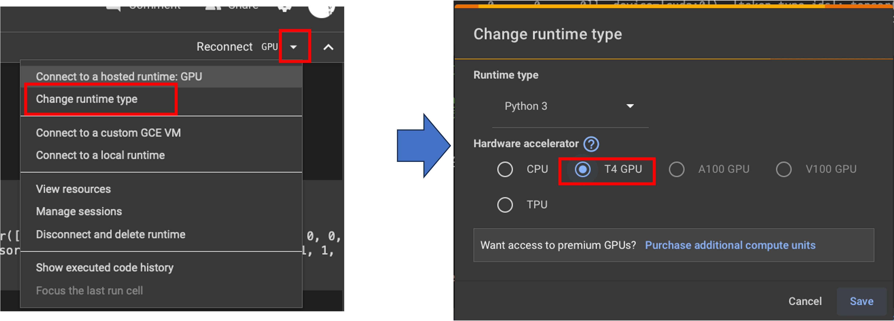

共通資料 Google Colaboratory による GPU 計算
資料
本資料は複数の講義で共通に使う資料です. 手元の PC に GPU がなく, 計算に時間がかかりすぎるときに, Google が提供するオンラインの Python の実行環境 Google Colaboratory (略して Colab) の GPU を使う手順を扱います.
この資料の情報は, 短い期間で古くなります. Colab の画面, 無料で使える範囲, 割り当てられる GPU の種類は変わります. 資料と実際の画面が食い違ったら, 公式のヘルプで最新の情報を確かめてください. この資料の画像は, 以前の画面のものです.
Colab を使う場面
講義の本文のプログラムは, GPU のない PC でも動くように, 学習の規模を小さくしてあります. 本文の設定で足りるなら, この資料は不要です.
次のようなときに Colab の GPU を使います.
- 本文の設定を大きくして, 精度を上げたい. たとえば第10章のマルチラベル分類で, 本文にある「元の設定」を試したいときです.
- 手元の PC で実行すると, 何十分もかかる.
本文のプログラムは, 使えるデバイスを自動で選びます. GPU が使える Colab では, そのままのプログラムが GPU で動きます.
準備
ノートブックを開く
Colab を使うには, Google アカウントが必要です. アカウントを持っていない場合は, Google のページから作成します.
Google Colaboratory を開き, 新しいノートブックを作成します. ノートブックは, プログラムをセルという単位に分けて書き, セルごとに実行する形式のファイル (拡張子 .ipynb) です. セルの左にある再生ボタンか, Shift + Enter で, そのセルを実行します.
GPU を使う設定
ノートブックの右上にある接続の状態の横の矢印から, 「ランタイムのタイプを変更」(Change runtime type) を開きます. ハードウェア アクセラレータで GPU (T4 GPU など) を選び, 保存します.

次のプログラムをセルに書いて実行し, True と表示されれば, GPU が使える状態です.
import torch
print(torch.cuda.is_available())無料の範囲では, 混んでいるときに GPU が割り当てられない場合があります. 時間をおいて, もう一度設定してください.
プログラムとデータの用意
ライブラリ
Colab には, PyTorch, NumPy, pandas などの主なライブラリが入っています. 入っていないライブラリは, セルの先頭に ! を付けて, シェルコマンドで入れます. たとえば第10章のマルチラベル分類には, 次のセルを実行します.
!pip install transformers fugashi unidic-liteデータ
データは, セルからダウンロードします. 第10章のマルチラベル分類のデータは, 次のとおりです. -P data は, 保存先を data ディレクトリにする指定です. ディレクトリがなければ作られます.
!wget -P data https://raw.githubusercontent.com/yakagika/yakagika.github.io/main/slds_data/ch15/chABSA.csv手元のファイルを使う場合は, 画面の左にあるフォルダのアイコンを開き, ファイルをドラッグアンドドロップして置きます.
プログラムと設定
本文のプログラムを, セルに貼り付けます. 本文のプログラムは, 学習の規模を冒頭の値で決めています. 第10章のマルチラベル分類の「元の設定」にするには, 次のように変えてから, すべてのセルを実行します.
EPOCHS = 5
MAX_LENGTH = 128
N_TRAIN = 2000 # 学習用の文は 1929 なので, 全件を使うプログラムの先頭付近で Using device: cuda:0 と表示されれば, GPU で計算されています.
使うときの注意
- ノートブックが閉じられたり, しばらく使わなかったりすると, 実行環境がリセットされ, アップロードしたファイルと, プログラムが作ったファイルは消えます. 必要なファイルは, 左のフォルダの画面からダウンロードして保存します. 次の実行でも使うデータは, 毎回ダウンロードのセルで取得し直すのが確実です.
- 無料の範囲では, GPU を使える時間に上限があり, 混んでいるときは割り当てられません. 上限の詳しい内容は公式のヘルプで確認してください.
- ノートブックに書いたコードと, アップロードしたデータは, Google のサーバに送られます. 個人情報や, 提供を受けたデータは, 外部へ送ってよいかを先に確認します. 考え方はバージョン管理とGitHubの, private のリポジトリに置く場合と同じです.
- API キーや認証トークンは, ノートブックに書きません. ノートブックを共有したときに, 鍵が相手にも見えます.